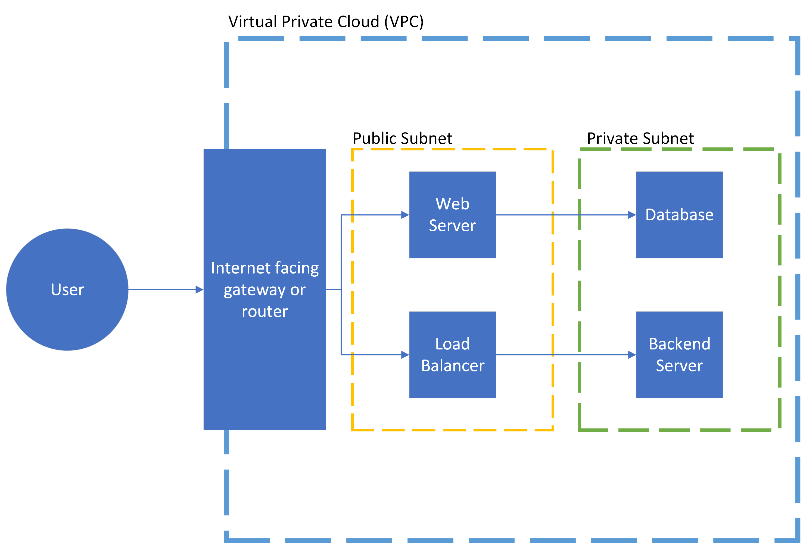
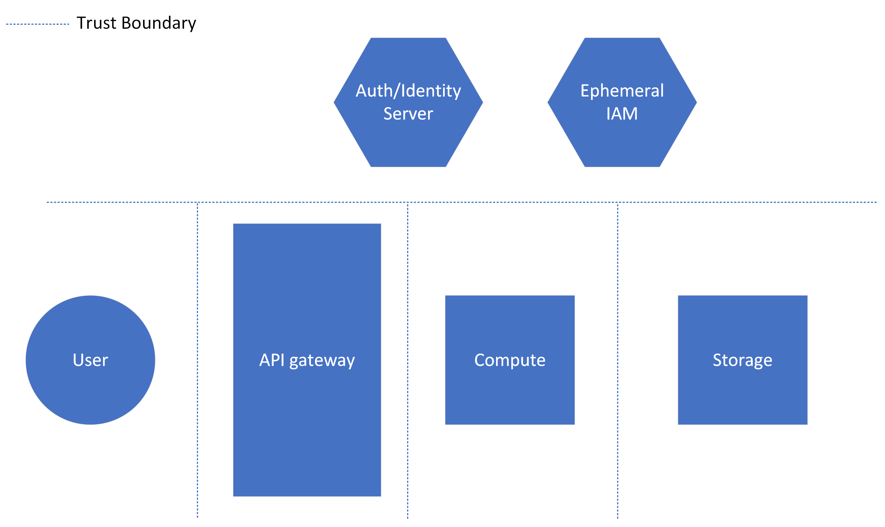
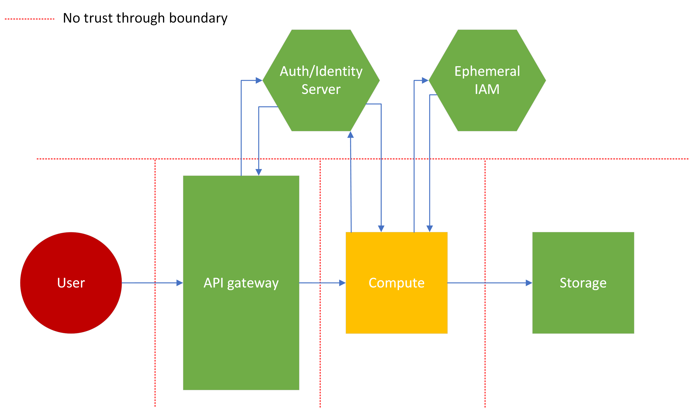
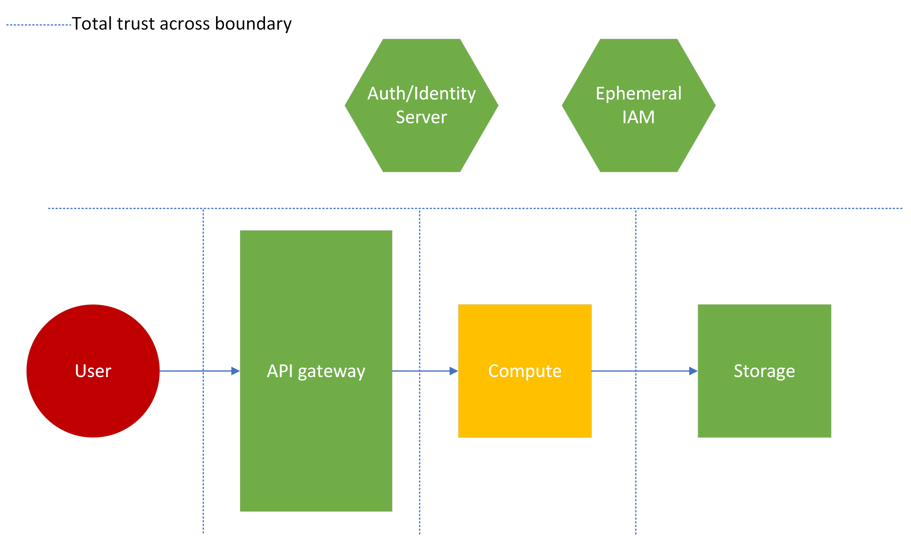
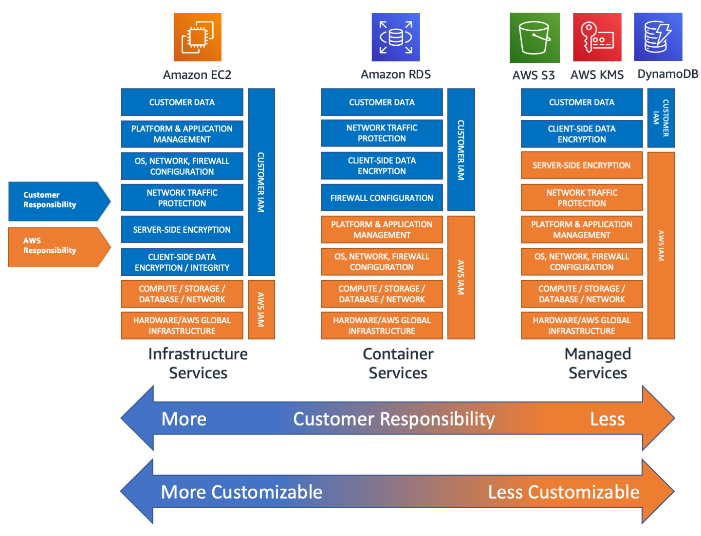

Cloud Architecture Security Cheat Sheet¶
Введение¶
В данном руководстве рассматриваются распространённые и необходимые паттерны безопасности, которым следует следовать при создании и анализе облачных архитектур. Каждый раздел посвящён конкретному принципу безопасности или архитектурному решению, которое необходимо учитывать. Руководство ориентировано на средние и крупные корпоративные системы, поэтому в нём обсуждаются дополнительные накладные элементы, которые могут быть излишними для небольших организаций.
Анализ рисков, моделирование угроз и оценка поверхности атаки¶
При разработке любой архитектуры приложения понимание рисков и угроз крайне важно для обеспечения надлежащей безопасности. Ни одна организация не может направить весь свой бюджет или ресурсы исключительно на безопасность, поэтому правильное распределение ресурсов в этой области необходимо. Поэтому предприятия должны проводить оценку рисков, мероприятия по моделированию угроз и оценку поверхности атаки для выявления следующего:
- Каким угрозам может подвергнуться приложение
- Вероятность того, что эти угрозы реализуются в виде атак
- Поверхность атаки, через которую эти атаки могут быть направлены
- Бизнес-последствия потери данных или функциональности в результате указанной атаки
Всё это необходимо для правильного определения масштаба обеспечения безопасности архитектуры. Однако это темы, которые заслуживают более детального рассмотрения. Воспользуйтесь ссылками на ресурсы ниже для более глубокого изучения в рамках обсуждения безопасной архитектуры.
Публичные и приватные компоненты¶
Безопасное объектное хранилище¶
Объектное хранилище, как правило, предоставляет следующие варианты доступа к данным:
- Доступ к ресурсам с использованием встроенных политик управления идентификацией и доступом (IAM)
- Использование криптографически подписанных URL и HTTP-запросов
- Прямой доступ через публичное хранилище
Доступ через IAM¶
Этот метод предполагает косвенный доступ через инструментарий — например, управляемый или самостоятельно управляемый сервис, работающий на эфемерной или постоянной инфраструктуре. Эта инфраструктура содержит постоянные учётные данные IAM плоскости управления, которые взаимодействуют с объектным хранилищем от имени пользователя. Метод лучше всего применять, когда в приложении есть другие пользовательские интерфейсы или системы данных, когда важно максимально скрыть систему хранения, или когда информация не должна/не будет видна конечному пользователю (метаданные). Его можно использовать в сочетании с веб-аутентификацией и журналированием для более точного отслеживания и контроля доступа к ресурсам. Основная проблема безопасности при таком подходе — зависимость от разработанного кода или политик, которые могут содержать уязвимости.
| Преимущества | Недостатки |
|---|---|
| Нет прямого доступа к данным | Возможное использование широкой политики IAM |
| Пользователь не видит объектное хранилище | Утечка учётных данных открывает доступ к API плоскости управления |
| Идентифицируемый и журналируемый доступ | Учётные данные могут быть захардкожены |
Этот подход приемлем для конфиденциальных пользовательских данных, однако требует строгого соблюдения лучших практик программирования и облачных стандартов для надлежащей защиты данных.
Подписанные URL¶
Подписывание URL для объектного хранилища предполагает использование какого-либо метода статической или динамической генерации URL, которые криптографически гарантируют, что сущность может получить доступ к ресурсу в хранилище. Этот подход лучше всего подходит в случаях, когда необходим или предпочтителен прямой доступ к конкретным файлам пользователя, так как отсутствует накладная нагрузка на передачу файлов. Рекомендуется использовать этот метод только для пользовательских данных, которые не являются особо конфиденциальными. Метод может быть безопасным, однако имеет заметные недостатки. При пользовательской, динамической и инъецируемой генерации подписанных URL возможна инъекция кода, а любой, кто получил URL, может анонимно получить доступ к ресурсу. Разработчики также должны учитывать, нужно ли и когда должен истекать подписанный URL, что повышает сложность подхода.
| Преимущества | Недостатки |
|---|---|
| Доступ только к одному ресурсу | Анонимный доступ |
| Минимальная видимость объектного хранилища для пользователя | Любой может получить доступ по URL |
| Эффективная передача файлов | Возможность инъекции при использовании пользовательского кода |
Публичное объектное хранилище¶
Этот метод не рекомендуется для хранения и распространения ресурсов и должен использоваться только для публичных, несекретных, общедоступных ресурсов. Такой подход к хранению предоставит злоумышленникам дополнительную возможность для разведки в облачной среде, и любые данные, хранящиеся в этой конфигурации в течение какого-либо времени, следует считать публично доступными (утёкшими в публичный доступ).
| Преимущества | Недостатки |
|---|---|
| Эффективный доступ ко многим ресурсам | Любой может получить доступ / нет приватности |
| Простой публичный файловый обмен | Неаутентифицированный доступ к объектам |
| Видимость всей файловой системы | |
| Случайная утечка хранимой информации |
VPC и подсети¶
Виртуальные частные облака (VPC) и публичные/приватные сетевые подсети позволяют разбить приложение и его сеть на отдельные сегменты, добавляя уровни безопасности внутри облачной системы. В отличие от других компромиссов между приватным и публичным, зрелая архитектура приложения, скорее всего, будет включать большинство или все эти компоненты. Каждый из них описан ниже.
VPC¶
VPC используются для создания сетевых границ внутри приложения, в пределах которых компоненты могут взаимодействовать друг с другом, подобно физической сети в центре обработки данных. VPC состоит из определённого числа подсетей — как публичных, так и приватных. VPC можно использовать для:
- Разделения целых приложений в рамках одной облачной учётной записи.
- Разделения крупных компонентов приложения на отдельные VPC с изолированными сетями.
- Создания разграничений между дублирующимися приложениями, используемыми для разных клиентов или наборов данных.
Публичные подсети¶
Публичные подсети содержат компоненты, которые имеют выход в интернет. Подсеть будет содержать элементы сетевой маршрутизации, позволяющие компонентам внутри подсети напрямую подключаться к интернету. Некоторые варианты использования:
- Публично доступные ресурсы, например фронтенд веб-приложений.
- Точки первичного входа в приложения, например балансировщики нагрузки и маршрутизаторы.
- Точки доступа для разработчиков, например бастионы (обратите внимание: они могут быть очень небезопасны при неправильном проектировании/развёртывании).
Приватные подсети¶
Приватные подсети содержат компоненты, которые не должны иметь прямого доступа к интернету. Подсеть, скорее всего, будет содержать сетевую маршрутизацию для подключения к публичным подсетям, чтобы получать интернет-трафик структурированным и защищённым образом. Приватные подсети отлично подходят для:
- Баз данных и хранилищ данных.
- Бэкенд-серверов и связанных файловых систем.
- Всего, что считается слишком конфиденциальным для прямого доступа из интернета.
Пример простой архитектуры¶
Рассмотрим простую диаграмму архитектуры ниже. VPC будет содержать все компоненты приложения, но элементы будут располагаться в конкретной подсети в зависимости от их роли в системе. Обычный процесс взаимодействия с этим приложением может выглядеть следующим образом:
- Доступ к приложению через интернет-шлюз, API-шлюз или иной интернет-ориентированный компонент.
- Этот шлюз подключается к балансировщику нагрузки или веб-серверу в публичной подсети. Оба компонента выполняют публично доступные функции и защищены соответствующим образом.
- Затем эти компоненты взаимодействуют со своими соответствующими бэкенд-аналогами — базой данных или бэкенд-сервером, расположенными в приватном VPC. Эти соединения более ограничены, что предотвращает посторонний доступ к потенциально «мягким» бэкенд-системам.

Примечание: На данной диаграмме намеренно опущены элементы маршрутизации и IAM для взаимодействия подсетей — для простоты и независимости от конкретного поставщика услуг.
Эта архитектура предотвращает прямое подключение к интернету менее защищённых бэкенд-компонентов или более рискованных сервисов, таких как базы данных. Она также обеспечивает доступ к общим публичным функциям из интернета, избегая дополнительных накладных расходов на маршрутизацию. Такую архитектуру проще защитить, сосредоточившись на безопасности в точках входа и разделив функциональность, разместив непубличную или конфиденциальную информацию в приватной подсети, где внешним сторонам будет сложнее её получить.
Границы доверия¶
Границы доверия — это соединения между компонентами системы, в которых компонентам необходимо принять решение об уровне доверия. Иными словами, эта граница представляет собой точку, где встречаются два компонента с потенциально разными уровнями доверия. Эти границы могут варьироваться по масштабу: от степеней доверия, предоставляемых пользователям, взаимодействующим с приложением, до доверия или проверки конкретных утверждений между функциями кода или компонентами облачной архитектуры. Однако, как правило, достаточно доверять каждому компоненту в части корректного и безопасного выполнения своей функции. Таким образом, границы доверия, скорее всего, будут возникать в соединениях между облачными компонентами, а также между приложением и сторонними элементами — такими как конечные пользователи и другие поставщики.
В качестве примера рассмотрим архитектуру ниже. API-шлюз подключается к вычислительному экземпляру (эфемерному или постоянному), который затем обращается к ресурсу постоянного хранения. Отдельно существует сервер, который может проверять аутентификацию, авторизацию и/или идентичность вызывающей стороны. Это обобщённое представление OAuth, IAM или системы каталогов, управляющей доступом к этим ресурсам. Кроме того, существует эфемерный IAM-сервер, управляющий доступом к хранимым ресурсам (с использованием подхода, аналогичного разделу Доступ через IAM выше). Как показано пунктирными линиями, границы доверия существуют между каждым вычислительным компонентом, API-шлюзом и сервером аутентификации/идентификации, даже если многие или все элементы могут находиться в одном приложении.

Изучение различных уровней доверия¶
Архитекторы должны выбрать конфигурацию доверия между компонентами, используя количественные факторы, такие как оценка/допустимый уровень риска, скорость развития проекта, а также субъективные цели безопасности. Каждый из приведённых ниже примеров описывает отношения на границах доверия, чтобы лучше объяснить последствия доверия тому или иному ресурсу. Уровень угрозы конкретного ресурса обозначен цветом: от зелёного (безопасный) до красного (опасный) — это показывает, каким ресурсам не следует доверять.
1. Пример с отсутствием доверия¶
Как показано на диаграмме ниже, этот пример описывает модель, в которой ни один компонент не доверяет никакому другому компоненту, вне зависимости от критичности или уровня угрозы. Такая конфигурация доверия, скорее всего, будет использоваться для приложений с чрезвычайно высоким риском — там, где хранятся особо личные или важные бизнес-данные, или где приложение в целом имеет крайне высокую бизнес-критичность.
Обратите внимание, что оба компонента — API-шлюз и вычислительный — обращаются к серверу аутентификации/идентификации. Это означает, что никакие данные, передаваемые между этими компонентами, даже находящимися рядом «внутри» приложения, не считаются доверенными. Вычислительный экземпляр должен затем принять эфемерную идентичность для доступа к хранилищу, поскольку вычислительный экземпляр не является доверенным для конкретного ресурса, даже если пользователь является доверенным для экземпляра.
Также обратите внимание на отсутствие доверия между сервером аутентификации/идентификации, эфемерным IAM-сервером и каждым компонентом. Хотя это не отражено на диаграмме, это будет иметь дополнительные последствия, такие как более строгие проверки перед аутентификацией и, возможно, бо́льшие накладные расходы на криптографические операции.

Этот подход может быть необходим для приложений в финансовой, военной или критической инфраструктуре. Однако специалистам по безопасности следует быть осторожными при продвижении данной модели, поскольку она будет иметь существенные недостатки с точки зрения производительности и сопровождения.
| Преимущества | Недостатки |
|---|---|
| Высокая степень уверенности в целостности данных | Медленно и неэффективно |
| Глубокая эшелонированная защита | Сложно |
| Вероятно, дороже |
2. Пример с высоким доверием¶
Рассмотрим противоположный подход, при котором всему доверяют. В этом случае «опасный» пользовательский ввод является доверенным и фактически передаётся напрямую в высококритичный бизнес-компонент. Ресурс аутентификации/идентификации не используется вовсе. В этом случае вероятность успешной атаки на систему выше, поскольку нет никаких средств контроля для её предотвращения. Кроме того, такая конфигурация может считаться расточительной, так как серверы аутентификации/идентификации и эфемерный IAM не выполняют в полной мере свою предназначенную функцию. (Это могут быть общие корпоративные ресурсы, которые не используются в полную силу).

Такая архитектура маловероятна для всех приложений, кроме самых простых и с минимальным риском. Не используйте эту конфигурацию границ доверия, если нет конфиденциального содержимого для защиты или если единственным критерием успеха является эффективность. Доверять пользовательскому вводу никогда не рекомендуется, даже в приложениях с низким риском.
| Преимущества | Недостатки |
|---|---|
| Эффективно | Небезопасно |
| Просто | Потенциально расточительно |
| Высокий риск компрометации |
3. Пример с частичным доверием¶
Большинство приложений используют именно такую конфигурацию границ доверия. Опираясь на знания из анализа рисков и поверхности атаки, специалисты по безопасности могут обоснованно присваивать доверие компонентам или процессам с низким риском и выполнять проверку только там, где это необходимо. Это предотвращает трату ценных ресурсов безопасности, но также ограничивает сложность и потери эффективности из-за дополнительных накладных расходов на безопасность.
Обратите внимание, что в этом примере API-шлюз проверяет аутентификацию/идентификацию пользователя, а затем сразу передаёт запрос вычислительному экземпляру. Экземпляру не нужно повторно проводить проверку, и он выполняет свою операцию. Однако, поскольку вычислительный экземпляр работает с недоверенными пользовательскими вводами (обозначены жёлтым — частичное доверие), всё равно необходимо принять эфемерную идентичность для доступа к системе хранения.
По своей природе этот подход ограничивает как преимущества, так и недостатки обоих предыдущих примеров. Эта модель, скорее всего, будет использоваться в большинстве приложений, если только преимущества приведённых выше примеров не являются необходимыми для удовлетворения бизнес-требований.
| Преимущества | Недостатки |
|---|---|
| Безопасность, основанная на рисках | Известные пробелы в безопасности |
| Стоимость/эффективность, исходя из критичности |
Примечание: Данная методология доверия отличается от Zero Trust. Для более детального изучения этой темы ознакомьтесь с CISA's Zero Trust Maturity Model.
Инструменты безопасности¶
Межсетевой экран веб-приложений¶
Межсетевые экраны веб-приложений (WAF) используются для мониторинга или блокировки распространённых атакующих нагрузок (таких как XSS и SQLi), или для разрешения только определённых типов и шаблонов запросов. Приложения должны использовать их в качестве первой линии обороны, подключая их к точкам входа — балансировщикам нагрузки или API-шлюзам, — чтобы обрабатывать потенциально вредоносный контент до того, как он достигнет кода приложения. Облачные провайдеры предоставляют базовые наборы правил, которые блокируют или отслеживают распространённые вредоносные нагрузки:
По своей природе эти наборы правил носят общий характер и не охватят все типы атак, с которыми может столкнуться приложение. Рекомендуется создавать пользовательские правила, соответствующие специфическим потребностям приложения в безопасности, например:
- Фильтрация маршрутов до допустимых конечных точек (блокировка веб-скрапинга)
- Добавление специальной защиты для выбранных технологий и ключевых конечных точек приложения
- Ограничение скорости запросов к чувствительным API
Журналирование и мониторинг¶
Журналирование и мониторинг необходимы для по-настоящему безопасного приложения. Разработчики должны точно знать, что происходит в их среде, используя механизмы оповещения, чтобы предупреждать инженеров, когда системы работают не так, как ожидается. Кроме того, в случае инцидента безопасности журналирование должно быть достаточно подробным, чтобы отследить злоумышленника по всему приложению и предоставить специалистам по реагированию достаточно информации для понимания того, какие действия были предприняты против каких ресурсов. Обратите внимание, что надлежащее журналирование и мониторинг могут быть дорогостоящими, и при внедрении журналирования следует обсудить компромиссы между рисками и затратами.
Журналирование¶
Для надлежащего журналирования рекомендуется:
- Журналировать все HTTP-вызовы уровня 7 с заголовками, метаданными вызывающей стороны и ответами
- Полезные нагрузки могут не журналироваться в зависимости от того, где происходит журналирование (до завершения TLS) и конфиденциальности данных
- Журналировать внутренние действия с информацией об акторе и разрешениях
- Передавать идентификаторы трассировки через весь жизненный цикл запроса для отслеживания ошибок или вредоносных действий
- Маскировать или удалять конфиденциальные данные
- Номера социального страхования (SSN), конфиденциальная медицинская информация и другие персональные данные (PII) не должны храниться в журналах
Специалисты в области права и compliance должны определить сроки хранения журналов для конкретного приложения.
Мониторинг¶
Для надлежащего мониторинга рекомендуется добавить:
- Оповещения об аномалиях:
- HTTP-ошибки 4xx и 5xx выше определённого процента от нормы
- Использование памяти, хранилища или CPU выше/ниже определённого процента от нормы
- Операции записи/чтения в базу данных выше/ниже определённого процента от нормы
- Количество вызовов бессерверных вычислений выше определённого процента от нормы
- Оповещения о неудачных проверках работоспособности
- Оповещения об ошибках развёртывания или цикличном включении/выключении контейнеров
- Оповещения или отключения при превышении лимитов стоимости
Аномалии по количеству и типу могут сильно варьироваться от приложения к приложению. Для правильного определения понятия аномалии необходим базовый уровень, специфичный для конкретной среды. Поэтому указанные выше проценты должны выбираться на основе этого базового уровня, а также с учётом таких факторов, как риск и пропускная способность команды реагирования.
WAF также могут иметь подключённые к ним механизмы мониторинга или оповещения для подсчёта вредоносных нагрузок или (в некоторых случаях) обнаружения аномальной активности.
Защита от DDoS¶
Облачные провайдеры предлагают широкий спектр продуктов защиты от DDoS — от простых до продвинутых, — в зависимости от потребностей приложения. Простая защита от DDoS зачастую может быть реализована с помощью WAF с правилами ограничения скорости и блокировки маршрутов. Более продвинутая защита может потребовать специальных управляемых инструментов, предлагаемых облачным провайдером. Примеры:
Решение о включении расширенной защиты от DDoS для конкретного приложения должно основываться на рисках и бизнес-критичности приложения, с учётом смягчающих факторов и стоимости (эти сервисы могут быть весьма недорогими по сравнению с бюджетами крупных компаний).
Модель разделённой ответственности¶
Модель разделённой ответственности (Shared Responsibility Model) — это система для облачных провайдеров (CSP) и тех, кто продаёт облачные сервисы, позволяющая правильно определить и разграничить ответственность разработчика и провайдера. Она разбивается на различные уровни контроля, соответствующие различным элементам/слоям технологического стека. Как правило, такие компоненты, как физические вычислительные устройства и пространство центров обработки данных, являются ответственностью CSP. В зависимости от уровня управления, разработчик может нести ответственность за весь стек от операционной системы и выше, или только за некоторые вспомогательные функции, код или администрирование.
Эта модель ответственности обычно классифицируется на три уровня сервиса:
- Инфраструктура как сервис (IaaS)
- Платформа как сервис (PaaS)
- Программное обеспечение как сервис (SaaS)
Существует множество других классификаций сервисов, но они не перечислены здесь для краткости.
Как следует из каждого названия, уровень ответственности, принимаемой CSP, соответствует уровню предоставляемого ими «сервиса». Каждый уровень имеет свои преимущества и недостатки, которые обсуждаются ниже.
IaaS¶
В случае IaaS инфраструктура поддерживается CSP, тогда как всё остальное поддерживается разработчиком. Это включает:
- Аутентификацию и авторизацию
- Хранение, доступ и управление данными
- Определённые сетевые задачи (порты, NACL и т.д.)
- Прикладное программное обеспечение
Эта модель отдаёт приоритет гибкости и конфигурируемости для разработчика, при этом являясь более сложной и, как правило, более дорогостоящей по сравнению с другими моделями сервиса. Она также наиболее близко напоминает локальные (on-premise) модели, популярность которых у крупных компаний снижается. По этой причине перенос определённых приложений в облачный IaaS может быть проще, чем перестройка с использованием более облачно-нативной архитектуры.
| Преимущества | Недостатки |
|---|---|
| Контроль над большинством компонентов | Наивысшая стоимость |
| Высокий уровень гибкости | Более высокие требования к обслуживанию |
| Простой переход с локальной инфраструктуры | Высокий уровень сложности |
Ответственность почти полностью лежит на разработчике и должна быть обеспечена соответствующим образом. Всё — от контроля сетевого доступа, уязвимостей операционной системы, уязвимостей приложений, доступа к данным до аутентификации/авторизации — должно учитываться при разработке стратегии безопасности IaaS. Как описано выше, это обеспечивает высокий уровень контроля практически над всем в технологическом стеке, но может быть очень сложным в обслуживании без достаточных ресурсов для таких задач, как обновления версий или миграции при прекращении поддержки. (Самостоятельно управляемые обновления безопасности рассматриваются более подробно ниже.)
PaaS¶
Платформа как сервис занимает промежуточное положение между IaaS и SaaS. Разработчик управляет:
- Аутентификацией и авторизацией приложения
- Программным обеспечением приложения
- Внешним хранением данных
Она предоставляет удобно упакованные варианты размещения кода и контейнеризации, которые позволяют небольшим командам разработчиков или менее опытным разработчикам приступить к работе над своими приложениями, не обращая внимания на более сложные или излишние вычислительные задачи. Как правило, это дешевле, чем IaaS, при этом сохраняя некоторый контроль над элементами, которые SaaS-система не предоставляет. Однако разработчики могут столкнуться с конкретными ограничениями используемого предложения или проблемами совместимости, поскольку код должен работать с правильным контейнером, фреймворком или версией языка.
Кроме того, хотя масштабируемость во многом зависит от провайдера и настройки, PaaS обычно обеспечивает более высокую масштабируемость за счёт возможностей контейнеризации и общих, воспроизводимых базовых операционных систем. По сравнению с IaaS, где масштабируемость должна обеспечиваться разработчиком, и SaaS, где производительность очень специфична для платформы.
| Преимущества | Недостатки |
|---|---|
| Проще в освоении и обслуживании | Возможные проблемы совместимости |
| Лучшая масштабируемость | Ограничения, специфичные для предложения |
Ручная работа по безопасности в PaaS-решениях также менее обширна (по сравнению с IaaS). Аутентификация и авторизация, специфичные для приложения, по-прежнему должны обрабатываться разработчиком, наряду с любым доступом к внешним системам данных. Однако CSP несёт ответственность за защиту контейнеризированных экземпляров, операционных систем, эфемерных файловых систем и определённых сетевых элементов управления.
SaaS¶
Модель программного обеспечения как сервиса характеризуется практически готовым продуктом, в котором конечному пользователю нужно лишь настроить или персонализировать небольшие детали для удовлетворения своих потребностей. Пользователь, как правило, управляет:
- Конфигурацией, администрированием и/или кодом в рамках границ продукта
- Некоторым доступом пользователей, например назначением администраторов
- Высокоуровневыми подключениями к другим продуктам через разрешения или интеграции
Весь технологический стек контролируется провайдером (облачным сервисом или другой программной компанией), и разработчик будет вносить лишь относительно небольшие изменения для удовлетворения нестандартных потребностей. Это ограничивает затраты и трудозатраты на обслуживание, а возникающие проблемы, как правило, можно решить с помощью службы поддержки провайдера, не требуя технических знаний для устранения неполадок во всём технологическом стеке.
| Преимущества | Недостатки |
|---|---|
| Минимальное обслуживание | Ограничено требованиями провайдера |
| Недорого | Минимальный контроль |
| Поддержка клиентов / устранение неполадок | Минимальная прозрачность / надзор |
Безопасность в SaaS одновременно является и наиболее простой, и наиболее сложной из-за описанного выше отсутствия контроля. Разработчику нужно будет управлять лишь небольшим набором функций безопасности: некоторыми элементами управления доступом, отношениями доверия/обмена данными с интеграциями и любыми последствиями для безопасности настроек. Все остальные уровни безопасности контролируются провайдером. Это означает, что любые исправления безопасности будут вне сферы влияния разработчика и, следовательно, могут быть выполнены несвоевременно или с уровнем безопасности, который не соответствует требованиям конечного пользователя (в зависимости от потребностей в безопасности). Однако такие исправления не потребуют участия и ресурсов конечного пользователя, что упрощает их с точки зрения затрат и бремени обслуживания.
Примечание: При поиске SaaS-решений рекомендуется запрашивать аттестационные документы компании и подтверждение соответствия таким стандартам, как ISO 27001. Ниже приведены ссылки на сайты аттестации каждого из основных CSP для дополнительного ознакомления.
Самостоятельно управляемый инструментарий¶
Ещё один способ более обобщённо описать эту модель разделённой ответственности — распределить облачный инструментарий по спектру «управляемости». Полностью управляемые сервисы оставляют конечному разработчику очень мало задач, помимо некоторых функций программирования или администрирования (SaaS), тогда как самостоятельно управляемые системы требуют значительно бо́льших накладных расходов на обслуживание (IaaS).
AWS предоставляет отличный пример этого различия в управляемости, показывая, где некоторые из их различных продуктов располагаются на разных точках спектра.

Примечание: Сложно точно определить, к какому типу сервиса относится то или иное предложение (например, IaaS или PaaS). Разработчикам следует стремиться понять модель, применимую к конкретному используемому инструменту.
Стратегия обновления для самостоятельно управляемых сервисов¶
Самостоятельно управляемый инструментарий потребует дополнительных накладных расходов со стороны разработчиков и инженеров поддержки. В зависимости от инструмента потребуются базовые обновления версий, обновления образов, таких как AMI или Compute Images, или другое обслуживание на уровне операционной системы. Используйте автоматизацию для регулярного обновления минорных версий или образов, и планируйте время в циклах разработки для обновления устаревших ресурсов.
Предотвращение пробелов в безопасности управляемых сервисов¶
Управляемые сервисы предоставят определённый уровень безопасности, например, обновление и защиту базового оборудования, на котором выполняется код приложения. Однако команда разработчиков по-прежнему несёт ответственность за многие аспекты безопасности в системе. Убедитесь, что разработчики понимают, какая безопасность будет их ответственностью в зависимости от выбора инструментов. Скорее всего, следующее будет частично или полностью ответственностью разработчика:
- Аутентификация и авторизация
- Журналирование и мониторинг
- Безопасность кода (OWASP Top 10)
- Обновление сторонних библиотек
Обратитесь к документации, предоставленной облачным провайдером, чтобы понять, какие аспекты безопасности являются ответственностью каждой из сторон, в зависимости от выбранного сервиса. Например, в случае бессерверных функций: